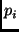

t_value _print(t_value v, t_int deps = 0, t_bool verbose = FALSE)
The printed representation of a t_text value is
<file 0xXXXXXXXX> if verbose is
false and the text is
represented by a backing file, in which case XXXXXXXX is the
file's hexadecimal identifier. Otherwise, it is the text value's
contents enclosed in double quotes.
The printed representation of a t_list value containing the values
is <
>,
where  denotes the printed representation of the value  .
.
The printed representation of a t_binding value containing the (name, value)
pairs
is
[
], where again
denotes the printed representation of the value  .
.
The printed representation of a t_closure value is
<Model name> if the closure is represented
by a model, in which case name is a name for the model file
in the repository. Otherwise, if verbose is true,
it is the complete list of formals, body, and context; if not
it is simply <Closure>.
If deps is greater than zero, the value's dependencies are also printed. In the current implementation, values of 1 and 2 provide different levels of detail. This feature is meant for debugging the evaluator itself.
Typically, _print is used for debugging purposes, and its result is ignored. However, it is important to remember that _print is a function, not a statement. Hence, one cannot simply write:
_print(v);
inside a function body. Instead, the call to _print must be used in a functional way, such as:
dummy = _print(v);
Note also that efficient implementations of the Vesta language will cache function results and re-use those cached results whenever it is safe to do so. Calls to the _print function itself are never cached. However, the _print function's side effect of printing to the terminal is not repeated whenever the call to _print is skipped due to a higher level hit on the function cache.
t_bool _assert(t_bool cond, t_value msg)